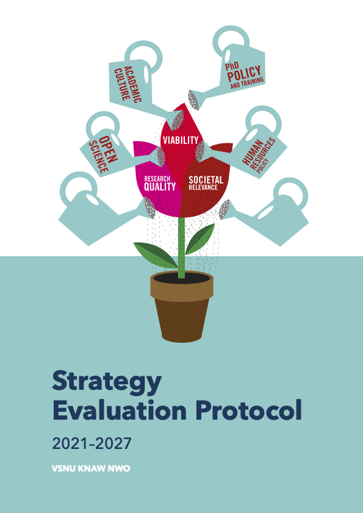

| Research quality | Relevance for society | |
|---|---|---|
| Products | Products for peers | Products for society |
| Use | Use by peers | Use by society |
| Recognition | Recognition by peers | Recognition from society |
2 May 2024
We demonstrate research impact by …
How is this used?

…evaluate a research unit in light of its own aims and strategy…
…coherent narrative argument supported by factual evidence…
…leaves room for plurality with respect to the application and interpretation…
Main assessment criteria
The unit addresses at least…
…integral aspects of each of the main assessment criteria…
DORA-compliant
| Research quality | Relevance for society | |
|---|---|---|
| Products | Products for peers | Products for society |
| Use | Use by peers | Use by society |
| Recognition | Recognition by peers | Recognition from society |
| Research quality | Relevance for society | |
|---|---|---|
| Products | Publications | Relevance for theme (e.g. SDGs) |
| Use | Citations | Mentions in media, policy, clinical guidelines |
| Recognition | Top p% cited | - |
Enrichment
Difficult
Data sources